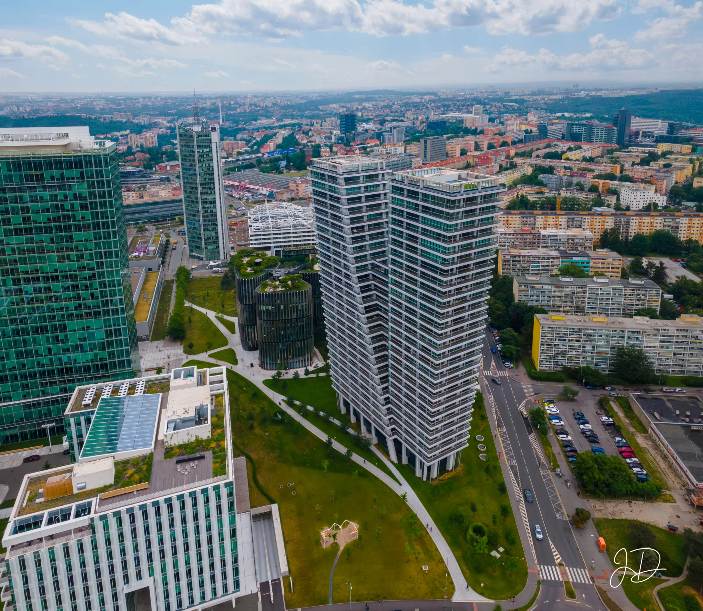

← Všechny služby
Focení architektury a areálů z dronu
Pro prezentaci stavby můžu zachytit její vztah k okolním ulicím. U většího areálu spojím celkový pohled se záběry jednotlivých budov.
Poptat focení architektury ↗
Co můžeme nafotit
- Pohled na stavbu v kontextu okolních ulic a budov.
- Přehled areálu s jeho vstupy, komunikacemi a jednotlivými objekty.
- Samostatné záběry budov pro web firmy nebo portfolio architekta.
Jak určím cenu
Pošlete mi adresu areálu a v mapě vyznačte budovy, které potřebujete zachytit. Nabídku připravím podle velikosti areálu, počtu objektů a požadovaných pohledů.
Domluvme focení
Do e-mailu doplňte místo, využití snímků a termín. Pokud chcete záběry nejdřív probrat, můžete mi zavolat.
Poptat focení architektury ↗